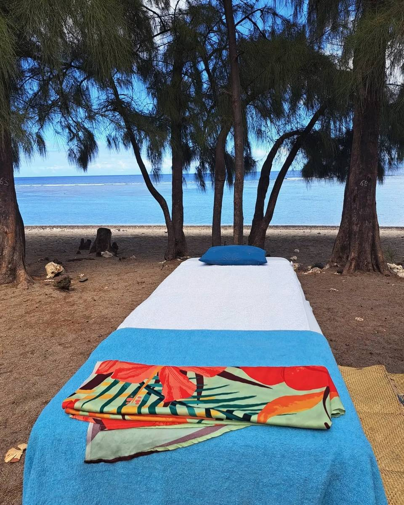
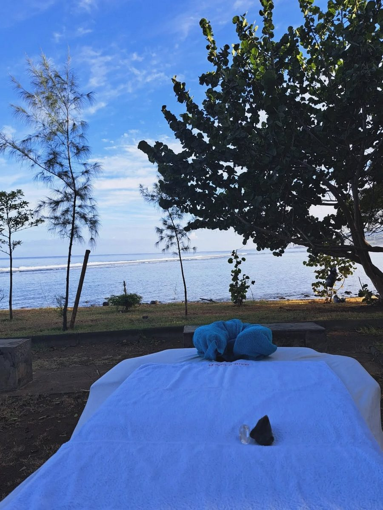
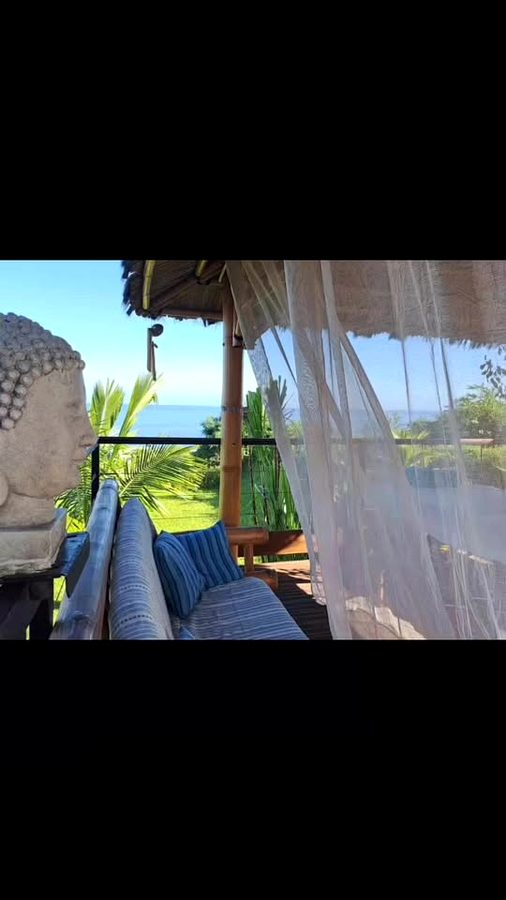
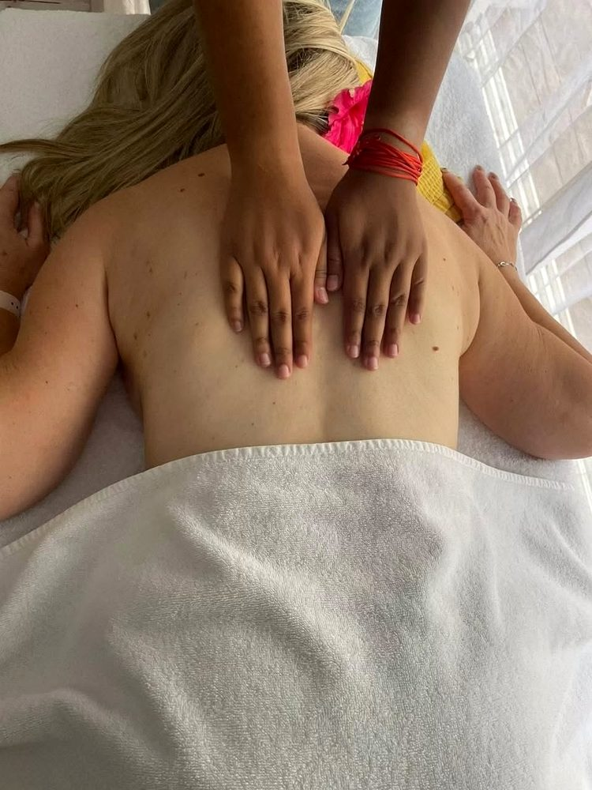
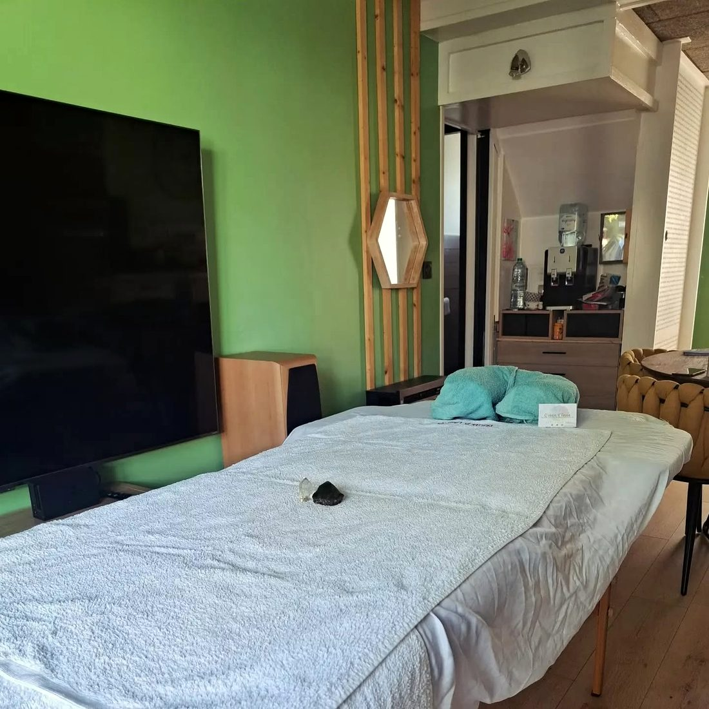
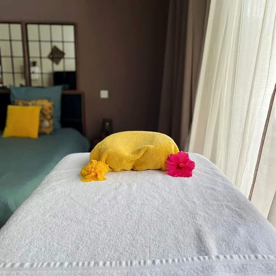

Les pieds
Les zones réflexes des pieds, en séance de 45 minutes ou associées aux autres soins.
« Je vous accompagne directement à domicile ou, pour une expérience encore plus unique, face à l'océan. Installez-vous, respirez… et laissez-vous transporter dans une véritable parenthèse de détente et de lâcher-prise. »

Massage en extérieur · photo O'main d'Anna


Le bruit des vagues, le souffle du vent, la nature comme écrin…
Un moment pour déposer les tensions, relâcher le corps et apaiser l'esprit.
Un massage face à l'océan, là où tout invite au lâcher-prise. Et si tu t'accordais, toi aussi, cette parenthèse hors du temps ? Anna annonce régulièrement ses disponibilités sur la plage de Saint-Leu, le matin et en début d'après-midi : réservation en message privé ou par téléphone.
Les mots d'Anna, publiés sur sa page le 14 janvier 2026.
Une pratique basée sur les pieds, les mains et le visage. Par pression sur les zones réflexes, qui correspondent à l'ensemble des organes et glandes du corps, la séance aide à soulager le stress et les tensions nerveuses.
Les zones réflexes des pieds, en séance de 45 minutes ou associées aux autres soins.
Les zones réflexes des mains, réunies avec les pieds et le visage dans la séance complète d'une heure.
Les zones réflexes du visage, avec un soin du visage, en 30 minutes ou en 1 h 15.

Cette médecine douce a beaucoup d'effets positifs sur le psychisme, selon Anna :
D'après la présentation de la réflexologie publiée par O'main d'Anna le 16 novembre 2021.
Séance à domicile ou en extérieur, sur rendez-vous. O'main d'Anna s'adapte à vos besoins et vous conseille.
Profitez d'un massage professionnel, chez vous, en toute tranquillité. Déplacement sur toute l'île sur rendez-vous, à domicile ou en extérieur, à la plage de Saint-Leu.

« Tu as su mettre un ambiance zen à la maison tout ce qu'il fallait pour me détendre. » Marine T., avis Facebook.
Plongez dans une bulle de relaxation, au rythme des vagues, pour un moment de bien-être inoubliable.

Massage en duo
À deux, pour la Saint-Valentin ou un moment à partager : « une parenthèse de bien-être à deux », dans une ambiance douce et relaxante, où chaque geste est une invitation à la détente et à l'évasion.
C'était une 1ere pour moi la réflexologie et ce fut une découverte très appréciable. […] J'ai dormi comme un bébé hier soir et ça fait un moment que cela ne m'était pas arrivé.
Marine T. · Facebook, 15 avril 2022
Très belle expérience, elle a su installer un cadre apaisant à domicile accompagné d'une explication sur la réflexologie que j'ai beaucoup apprécié.
Maeva M. · Facebook, 12 janvier 2022
Je recommande la réflexologie qui m'a procuré une sensation de bien être instantané. L'accueil chaleureux et la compétence de votre hôte vous fera passer un moment très agréable dans une ambiance zen.
Fabrice Z. · Facebook, 20 novembre 2021
Je recommande, les mains d'Anna m'ont bien détendu, ça fait un bien fou au corps.. j'ai ressenti un relâchement au niveau des tensions que j'avais..
Parvati P. · Facebook, 22 février 2022
Une carte cadeau O'main d'Anna, « juste à poser sous le sapin » : réflexologie, massage relaxant, pierres chaudes ou madérothérapie, à vivre à domicile ou face à l'océan. Cartes cadeaux disponibles sur demande.
Pour composer la vôtre ou réserver un moment pendant les fêtes, Anna vous répond directement.
Par téléphone, sur WhatsApp ou en message privé sur la page Facebook.
« Prendre soin de soi, c'est essentiel. » Besoin de détente ou d'une pause pour soi ? O'main d'Anna s'adapte à vos besoins et vous conseille.
Écrire sur WhatsApp